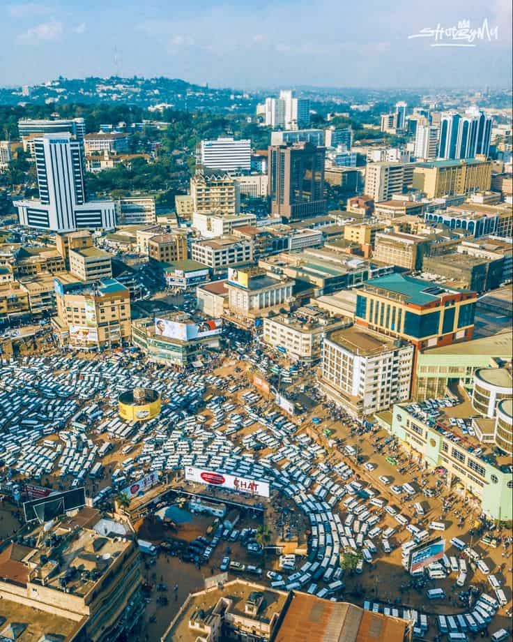
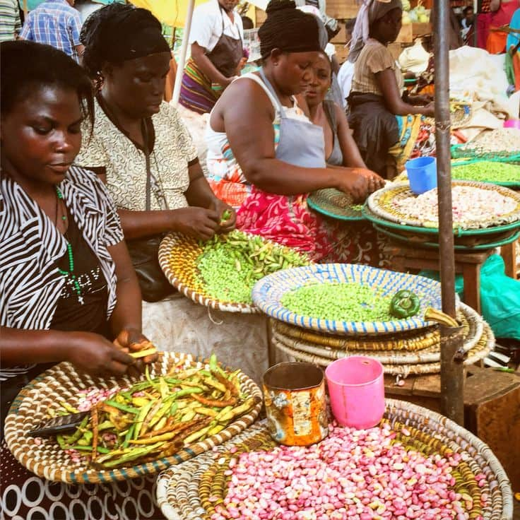
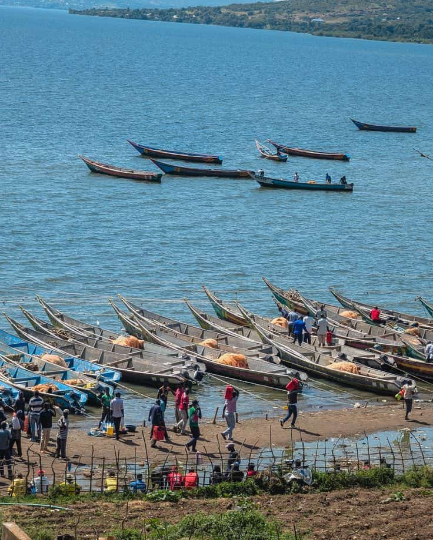
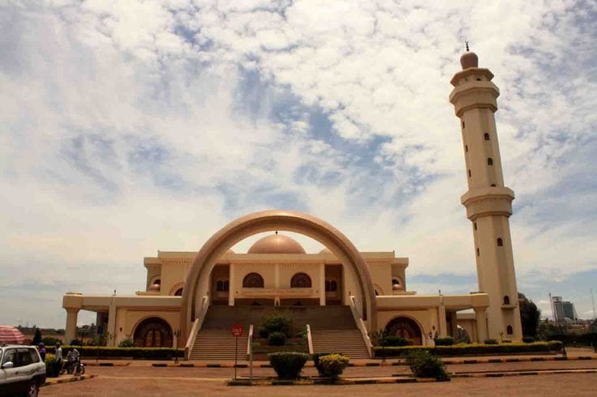
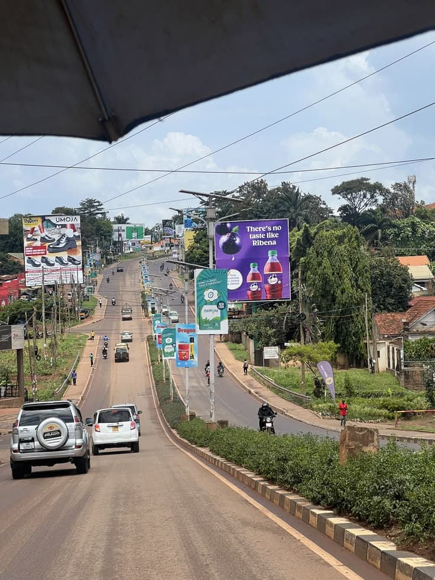

Discover the City
Explore the vibrant life, landscapes, and business districts of our beautiful city.






Explore the vibrant life, landscapes, and business districts of our beautiful city.




